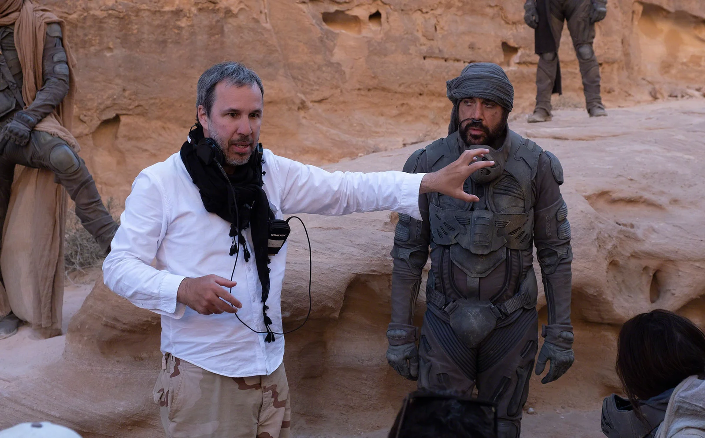
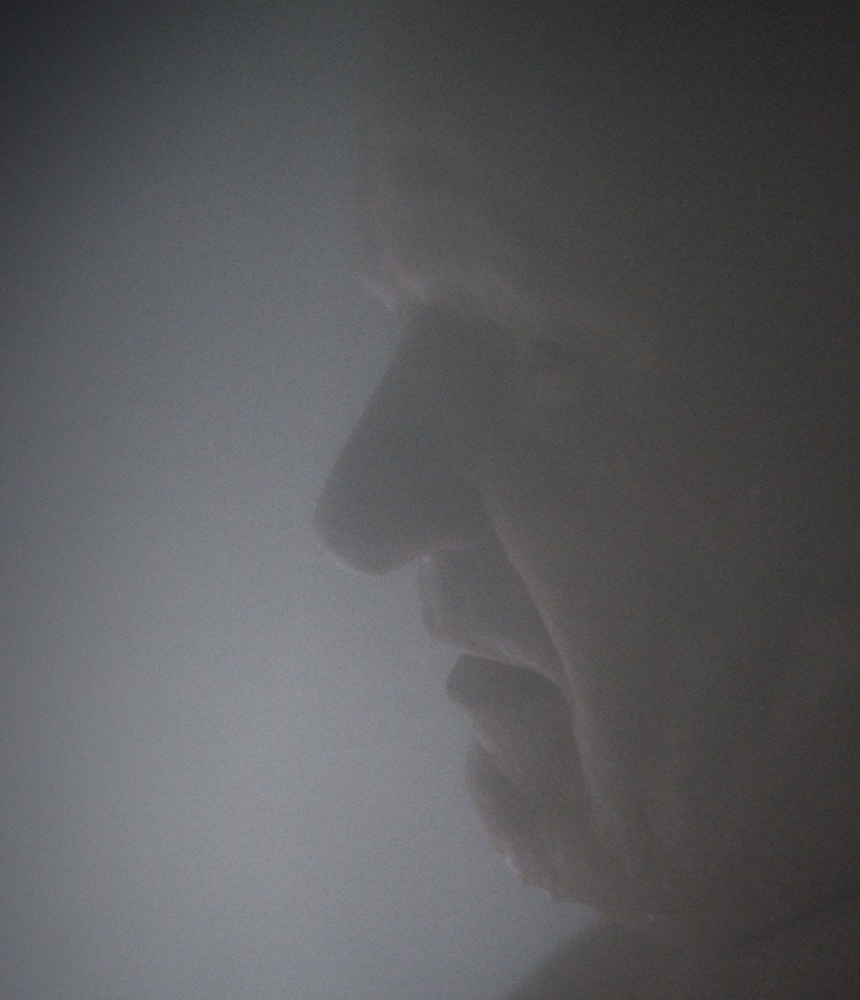
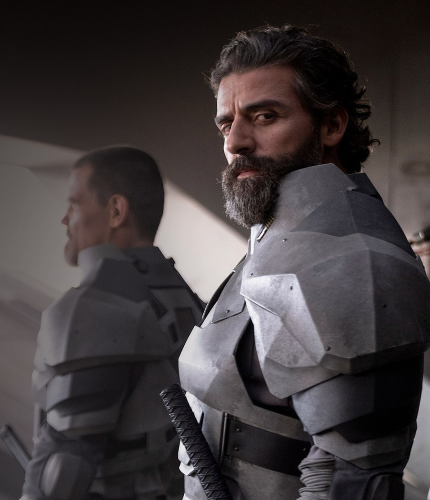
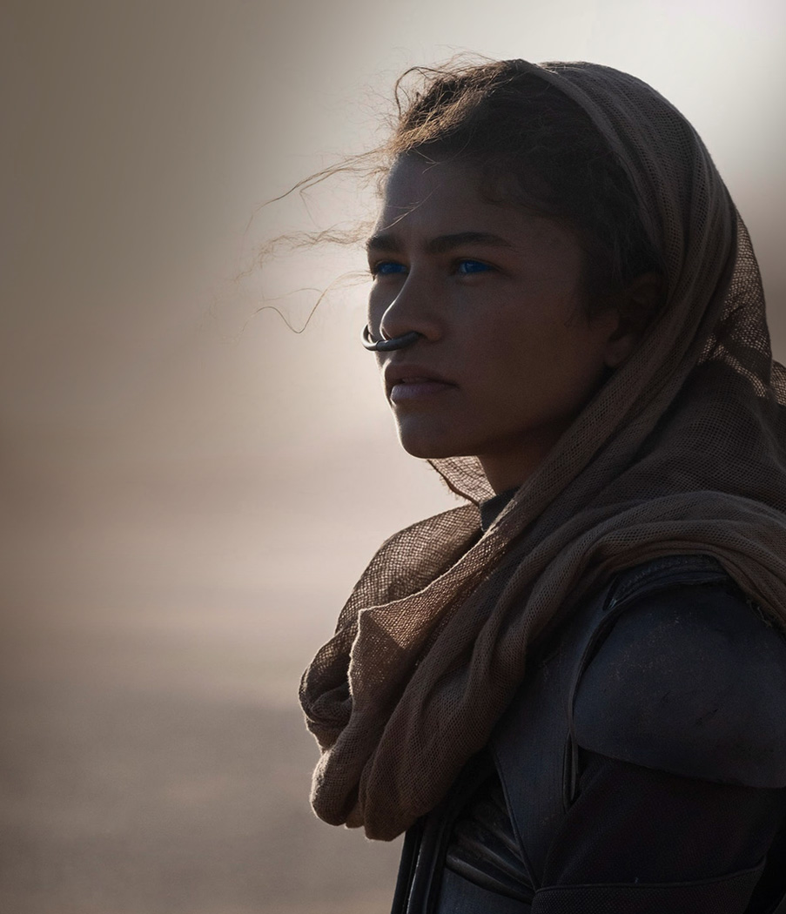
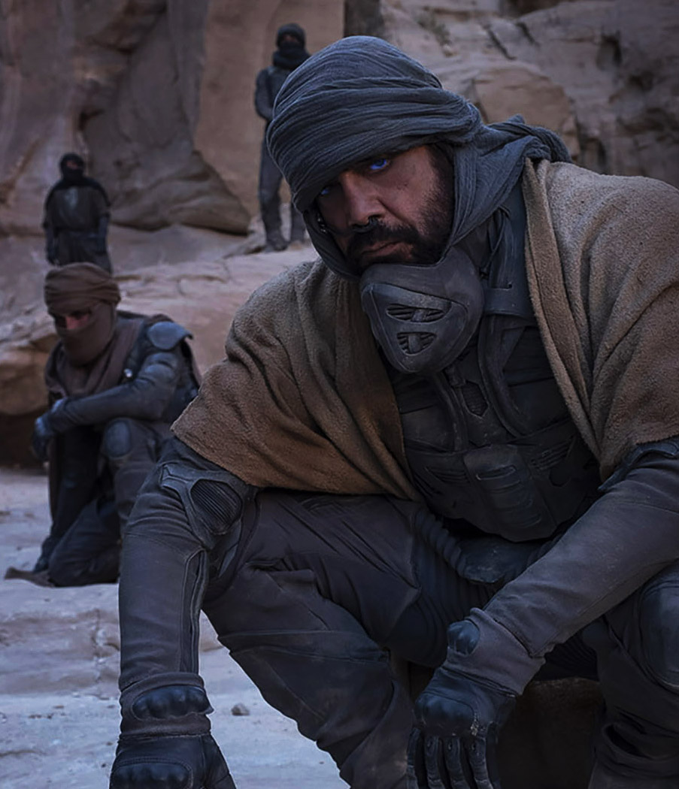
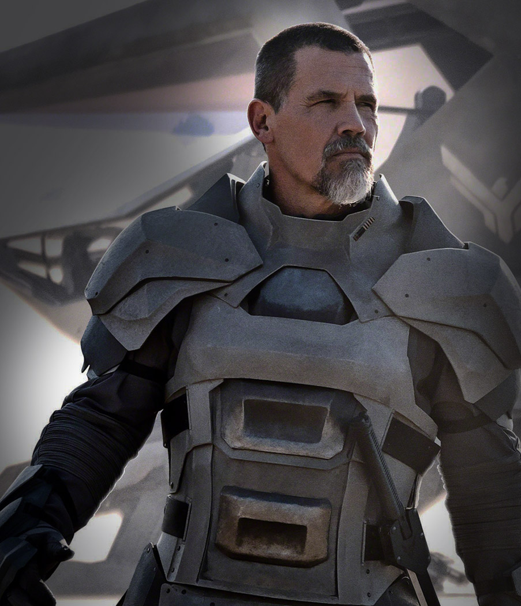
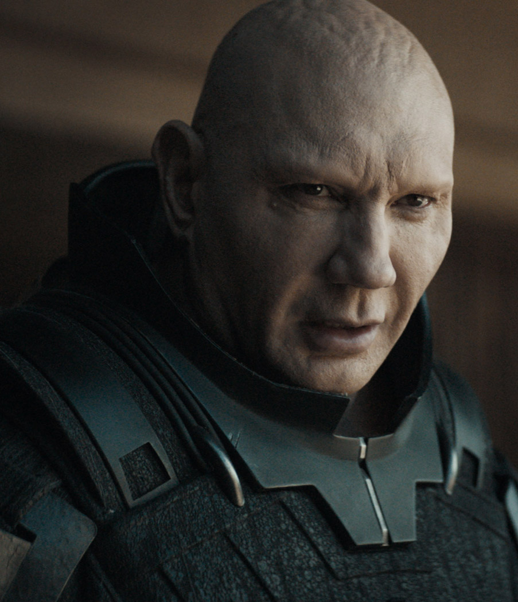
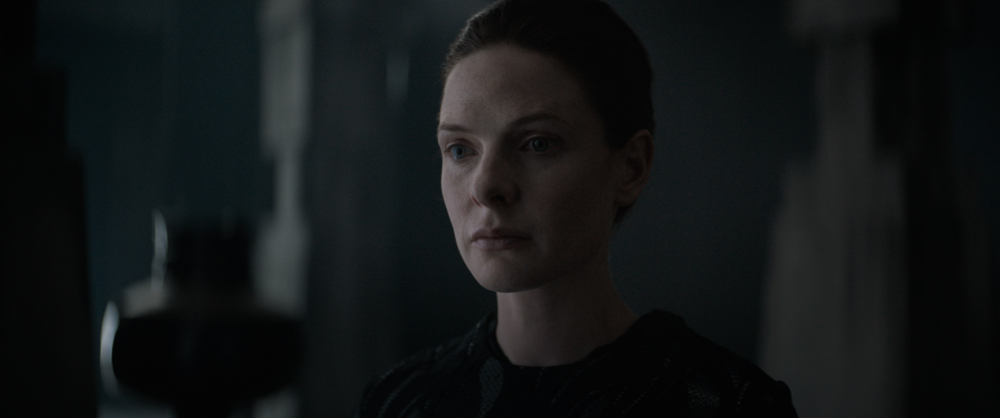
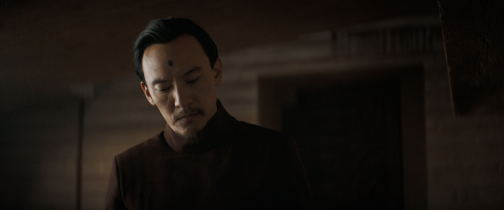
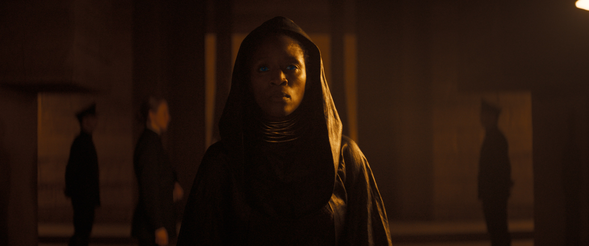

Oscar nominee Denis Villeneuve (“Arrival,” “Blade Runner 2049”) directs Warner Bros. Pictures and Legendary Pictures’ “Dune,” the big-screen adaptation of Frank Herbert’s seminal bestselling book. A mythic and emotionally charged hero’s journey, “Dune” tells the story of Paul Atreides, a brilliant and gifted young man born into a great destiny beyond his understanding, who must travel to the most dangerous planet in the universe to ensure the future of his family and his people. As malevolent forces explode into conflict over the planet’s exclusive supply of the most precious resource in existence—a commodity capable of unlocking humanity’s greatest potential—only those who can conquer their fear will survive. Villeneuve directed “Dune” from a screenplay he co-wrote with Jon Spaihts and Eric Roth based on the novel of the same name written by Frank Herbert. Villeneuve also produced the film with Mary Parent, Cale Boyter and Joe Caracciolo, Jr. The executive producers are Tanya Lapointe, Joshua Grode, Herbert W. Gains, Jon Spaihts, Thomas Tull, Brian Herbert, Byron Merritt and Kim Herbert.
Only in cinemas
About the film

Characters






Paul Atreides - Timothée Chalamet
Duke Leto Atreides - Oscar Isaac
Lady Jessica - Rebecca Ferguson
Chani - Zendaya
Stilgar - Javier Bardem
Gurney Halleck - Josh Brolin
Duncan Idaho - Jason Momoa
Rabban Harkonnen - Dave Bautista
Videos & images


